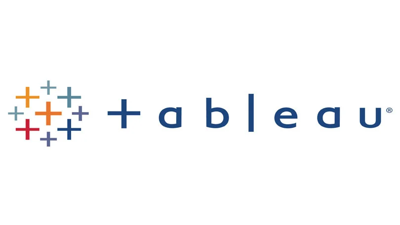

Data Cleaming in SQL
This MySQL project demonstrates data cleaning techniques using a real-world layoffs dataset, including removing duplicates, standardizing values, and handling null entries to prepare the data for analysis.
Data analyst in training with a background in technical problem-solving and process improvement. This portfolio showcases hands-on projects where I analyze real datasets using SQL, Excel, and Tableau to uncover trends and communicate insights effectively. @LisaWright
This MySQL project demonstrates data cleaning techniques using a real-world layoffs dataset, including removing duplicates, standardizing values, and handling null entries to prepare the data for analysis.
This project demonstrates a complete exploratory data analysis using MySQL, where SQL queries are used to explore a layoffs dataset, starting with basic metrics and progressing to more advanced trend analysis to derive insights from the data.

Interactive Tableau dashboards showcasing exploratory analysis, trend identification, and data-driven insights across real-world datasets.
Winchester, VA 22602